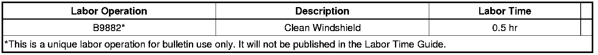

Body - Marks/Stains on Windshield When Wet
TECHNICALBulletin No.: 09-08-48-002A
Date: March 19, 2009
Subject:
Marks/Stains on Windshield When Wet (Clean Windshield)
Models:
2010 and Prior Passenger Cars and Trucks (Including Saturn and Saab)
2010 and Prior HUMMER H2, H3
Supercede:
This bulletin is being revised to update the models and model years. Please discard Corporate Bulletin Number 09-08-48-002 (Section 08 - Body and Accessories).
Condition
Some owners may comment that marks/stains appear on the windshield when the windshield is wet.
Cause
This condition may be caused by contact between the windshield and the vacuum hoses or other tools used in the assembly process. This contact may leave a residue that creates a water repellent surface on the glass which, in wet conditions, appear as marks/stains on the surface.
Correction
Important
DO NOT REPLACE THE WINDSHIELD FOR THIS CONDITION.
To clean the windshield, use Eastwood Glass Polishing Compound*. Follow the manufacturer's directions for product use. Use only hand tools. DO NOT USE POWER TOOLS.
Parts Information
Eastwood Glass Polishing Compound
1-800-343-9353 (for overseas inquiries: +1-610-705-2200)
http://www.eastwoodco.com/
*We believe this source and their products to be reliable. There may be additional manufacturers of such products. General Motors does not endorse, indicate any preference for or assume any responsibility for the products from this firm or for any such items which may be available from other sources.
Warranty Information

For vehicles repaired under warranty, use the table above.

Disclaimer